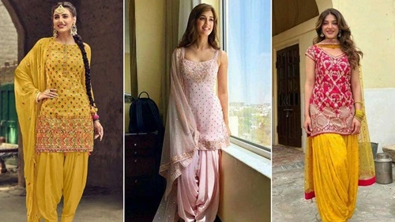

Patiala Salwar Suit
The name Patiala is derived from one of the popular cities in Punjab. This unique suit comprises baggy, loose-style pleated trousers paired with a short kurti and a phulkari dupatta. It is a functional attire for all Punjabi women. It is a very comfortable and airy dress to wear. This suit was part of the royal family’s outfit in ancient times.